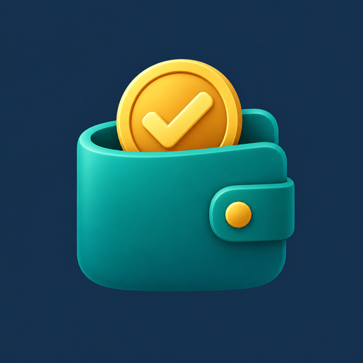

Créditos y Cobranzas
Ingresá para administrar clientes, préstamos y pagos.
Ingresar al sistemaCómo instalar en mi dispositivo
- Android: abrí esta página en Chrome. Tocá el botón de instalación si aparece, o el menú ⋮ y buscá “Agregar a la pantalla principal” o “Instalar aplicación”.
- iPhone o iPad: abrí esta página en Safari, tocá Compartir y elegí “Agregar a inicio”. Si aparece “Abrir como app web”, dejalo activado.
- Windows: abrí esta página en Chrome o Edge. Usá el botón de instalación si aparece, o la opción para instalar esta página como aplicación desde el menú del navegador.
Se instala el acceso de GitHub. Al ingresar se abre el sistema en Google Apps Script. Para consultar o guardar datos necesitás internet.